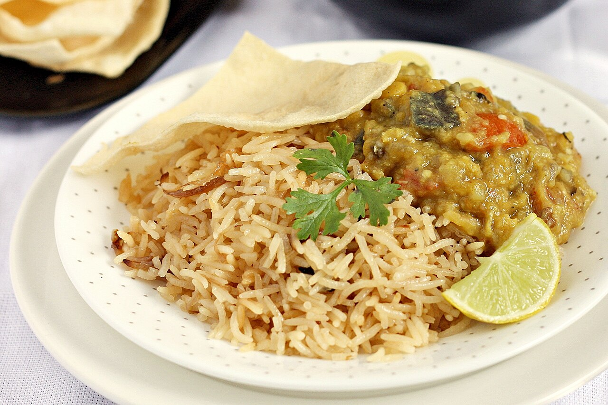

Prep30 min
Cook90 min
Total120 min
Serves6
Difficultyadvanced
Allergens: none of the common ones
Ingredients
Quantities for 6.
- 700g, shoulder on the bone, cut into 4cm pieces Muttonbone is what makes the gravy
- 150g Toor Dalthe backbone of the dal mix
- 50g Masoor Dal
- 50g Chana Dal
- 50g Moong Dal
- 200g, peeled and cubed Pumpkinred pumpkin, for sweetness
- 150g, cubed Eggplant
- 1 small bunch, leaves picked Methi Leavesthe bitter note that defines dhansak
- 3 medium — 2 chopped, 1 finely sliced Onionthe sliced one is for the brown onion garnish
- 2 medium, chopped Tomato
- 10 cloves Garlic
- 5cm piece Ginger
- 3, slit Green Chilli
- 2 tbsp Coriander Powder
- 1 tbsp Cumin Powder
- 1 tsp Turmeric
- 1.5 tsp Chilli Powder
- 2 tsp Garam Masalastand in for dhansak masala
- 2 x 3cm sticks Cinnamon
- 6 Cloves
- 4 green pods Cardamom
- 1 tsp, coarsely cracked Black Pepper
- 40g pulp, soaked in 100ml hot water Tamarind
- 1.5 tbsp, grated Jaggery
- 15 leaves Mintoptional
- 1/2 cup, chopped Coriander Leavesoptional
- 5 tbsp Neutral Oil
- to taste Salt
- 1.2 litres Water
Equipment
pressure cooker, stovetop, blender
Before you start
- Rinse the four dals together and soak them 45 minutes; they cook far more evenly.
- Bring the mutton to room temperature 30 minutes ahead so it browns instead of steaming.
- Soak the tamarind in hot water while the dals cook, then squeeze and strain out the fibres.
Method
- Pressure cook the drained dals with the pumpkin, eggplant, methi leaves, chopped onion, tomato, turmeric and 1 litre of water for 5 whistles, about 20 minutes.The vegetables melt away — that is the point. Do not keep them chunky.
- Meanwhile heat 3 tbsp oil in a heavy pan and brown the mutton in two batches over high heat, 5 minutes a batch.Crowding the pan is the single most common mistake; the meat will grey instead of crusting.
- Pound the garlic, ginger and green chilli to a coarse paste and fry it in the same pan for 2 minutes, until the raw smell lifts.
- Add the cinnamon, cloves, cardamom, black pepper, coriander powder, cumin powder, chilli powder and garam masala and fry 90 seconds, splashing in 2 tbsp water when it catches.
- Return the mutton, add 200ml water, cover and simmer 45 minutes until a knife slides into the meat with no resistance.
- Cool the dal mixture slightly, fish out any large spice pieces, and blend to a smooth, pourable purée.Blend it hot and it will spit — wait ten minutes, and leave the lid vented.
- Pour the purée over the mutton, add the tamarind extract, jaggery and salt, and simmer uncovered 20 minutes, stirring every few minutes.It sticks readily once thick. Use a flat wooden spoon and scrape the base.
- Taste and balance — it should land sour first, then sweet, then hot. Add tamarind or jaggery a teaspoon at a time.
- Fry the sliced onion in the remaining 2 tbsp oil until dark brown and crisp, about 10 minutes over medium heat.
- Rest the dhansak 10 minutes off the heat, then top with the fried onion, mint and coriander leaves.
Storage
Keeps 3 days refrigerated and freezes well for 2 months. It thickens overnight — loosen with hot water and reheat gently, as a fast reheat scorches the dal.
Recipe v1.0.0, last updated 2026-07-31. Curated for Khaana and kept under version control.